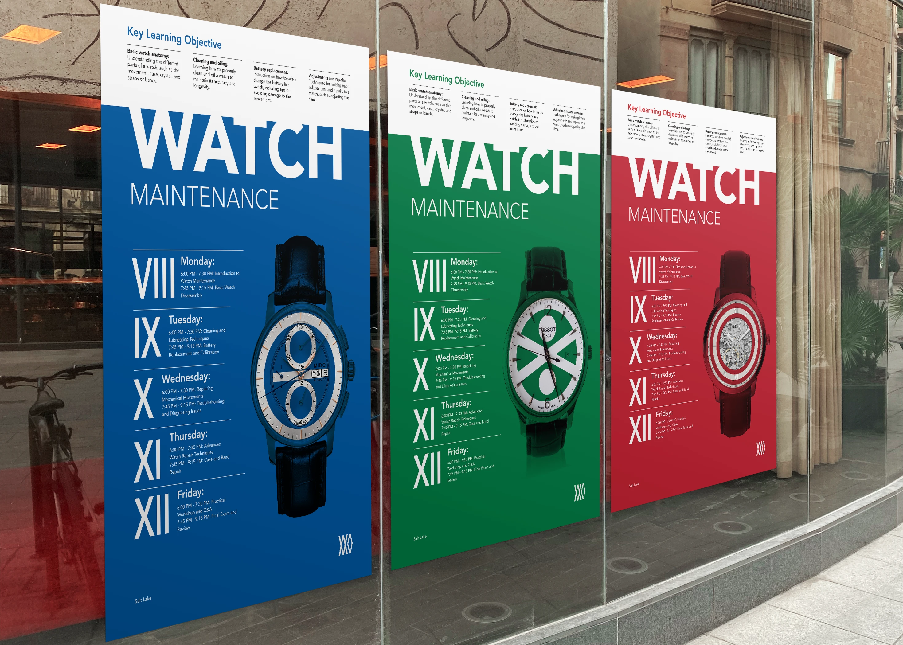

Poster 73
Poster 73 is based on the idea of reflecting others. Every element on this poster is a symbol of a reflection. The prime number 73 reflecting the prime number 37. 73 written in binary 10101 is an anagram. Picking up the pen to reflect the world.

Watch Maintenance
A minimalist poster exploring the intricate beauty of timepiece mechanics and the art of precision maintenance.
